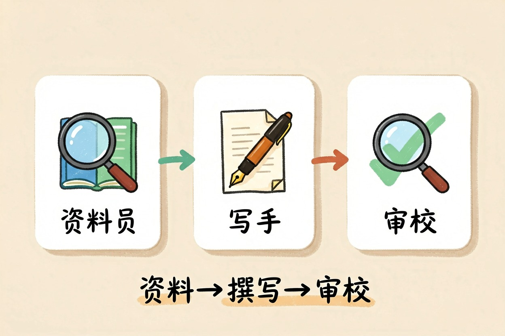
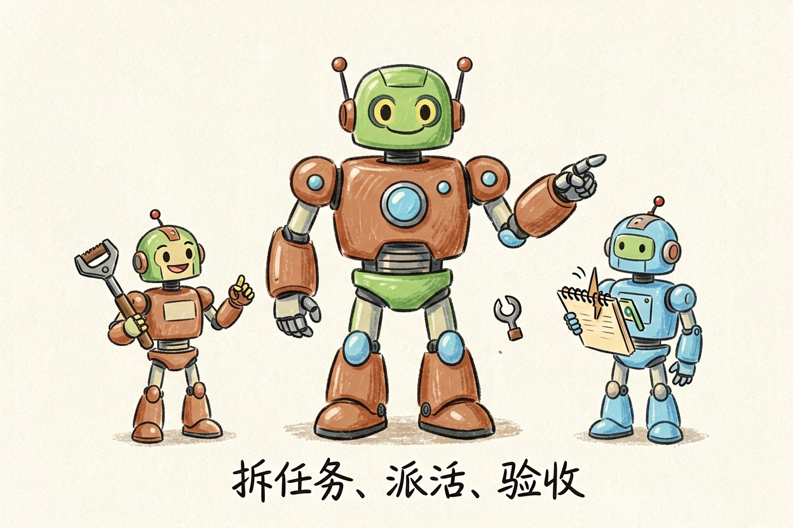
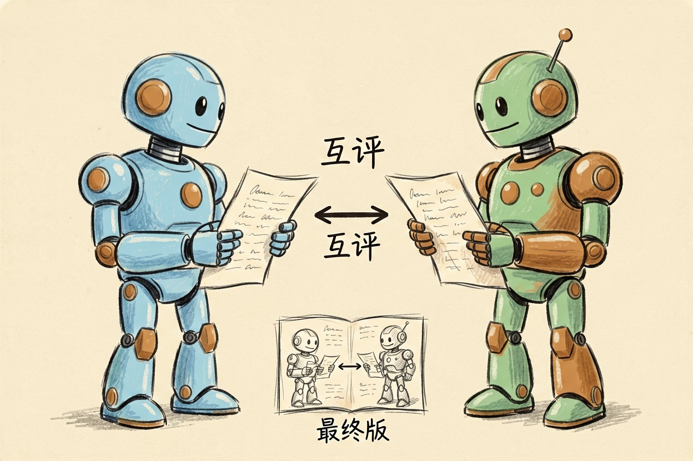
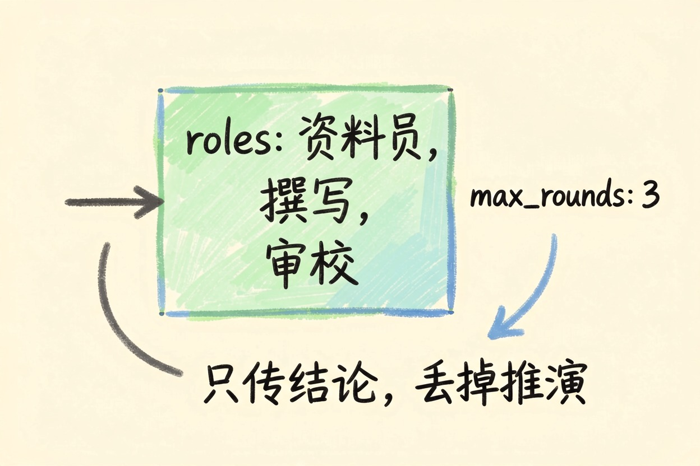
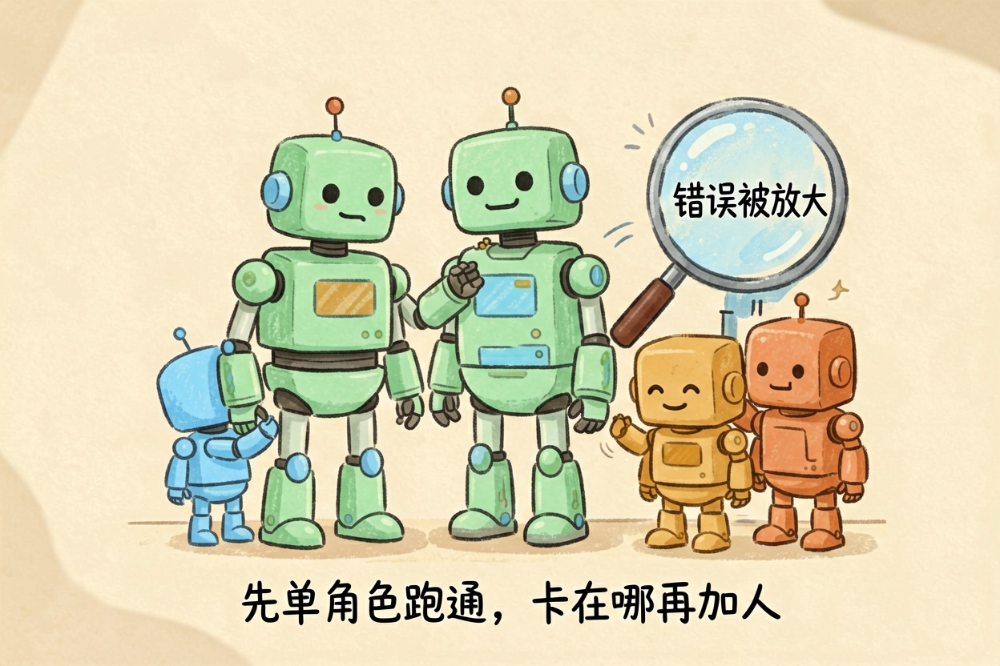
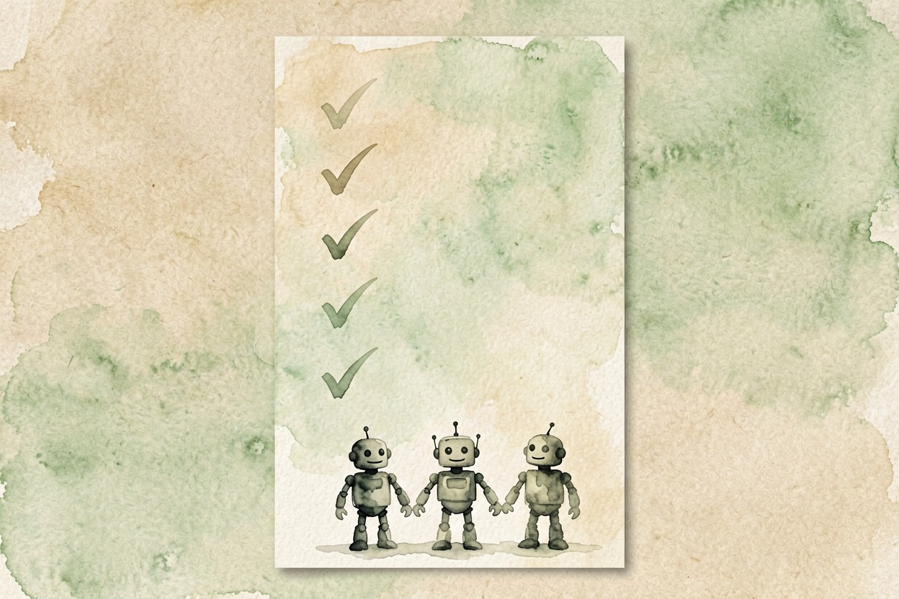

多智能体协作是什么？一个 AI 变一个团队 — Learntide
与其让一个模型从头扛到尾，不如拆成几个角色各管一摊。效果会好一些，慢和贵也一起跟着来。
多智能体协作是什么：把活拆给几个 AI

多智能体协作是什么？说白了，就是不让一个模型从头干到尾，而是拆成几个角色，各自管一摊。有的负责查资料，有的负责动笔，有的专门挑毛病，再有一个统筹进度。
这几个角色背后可能是同一个模型，只是提示词不同、能用的工具不同。分的不是模型，是职责。
multi-agent是什么，常见的三种分工

第一种是流水线。资料员查完交给写手，写手写完交给审校，一环接一环，方向单一，最好理解。
第二种是主管带下属。一个总控角色负责拆任务、派活、验收，下面的角色只管自己那一块。任务边界不清楚时，这种更好使。
第三种是互评。两三个角色对同一个问题各写各的，再互相挑错，最后合并成一版。适合结论要经得起推敲的场合。
roles:
- name: 资料员
tools: [search, read_url]
job: 只找事实和出处，不下结论
- name: 撰写
tools: []
job: 依据资料员给的材料成文，缺材料就回退
- name: 审校
tools: []
job: 逐条核对引用，标出没有出处的句子
max_rounds: 3这段配置里最要紧的是 job 那一行。职责写得越窄，角色之间越不容易互相越界。
智能体之间怎么分工，话又怎么传下去

角色之间靠消息传递，本质上就是把上一个角色的输出，塞进下一个角色的输入里。
麻烦也在这里。传的内容越长，后面每一步的读取成本越高；传得太少，接手的角色又缺依据，只能自己脑补。多数框架的做法是只传结论和关键材料，中间的推演过程丢掉。
另一个常被忽略的是终止条件。没有轮次上限，几个角色能来回客气很多轮，额度耗光了还没交付。上面配置里那行 max_rounds 就是干这个用的。
还有一种更省事的传法：几个角色共用一块公共记录，各写各的那一段。谁需要什么自己去翻，不用一层层往下递。
什么样的活值得这么折腾

判断标准其实就一条：这个任务是不是天然分阶段，而且每个阶段的评判标准不一样。
写一份调研报告算典型。查证要的是准，成文要的是顺，挑刺要的是狠，三种要求本来就打架。分开做，质量确实更稳。
第二个判断点是有没有人能验收。角色再多，最后总得有个标准说这一版行不行。标准说不清楚，加多少角色都收敛不了。
反过来，改错别字、翻译一段话、写条朋友圈，单个模型一次就完事。拆成三个角色只会更慢、更贵，还多出两处可能出错的接口。
别为了热闹堆角色
角色越多，出错的地方越多。资料员搞错一个数字，后面两位只会把它抄得更工整，没人回头质疑。错误在链条里是会被放大的，不是被纠正的。
成本涨得也快。每多一轮传递，就多一次完整的读取和生成，账单是按环节数往上翻的。
务实的做法是先用单个角色跑通，卡在哪一步再往哪里加人手。多智能体协作是什么这个问题的答案，从来不该是「角色越多越好」。


本文信息核对于 2026-08-08。AI 产品的价格、免费额度与功能变动频繁，实际以各工具官网当前说明为准。